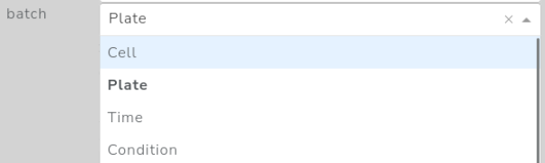
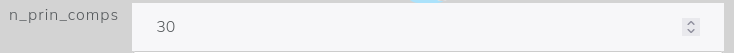

Creating New Nodes#
Structure of the method file#
# new_method.py
from sc_interative import config
def method_function():
...
def plot_function():
...
# Any addition functions and arguments required
# Code...
#End of the file
config.methods["method_name"] = {
"properties": {
"type":"QC",
"make_new_h5ad":False,
},
"args": {
"execution" : [
#Execution args...
]
"postexecution" : [
#Execution args...
]
"plot" : [
#Execution args...
]
},
"function": method_function,
"plot": plot_function,
}
Properties#
The properties key contains a dictionary with the basic information of the method. The dictionary must contain the following information:
type(str): type of method. Any name is valid. Describes the type of method (e.g. “QC” for quality control, “DR” for dimensionality reduction, “CLUSTERING”…)make_new_h5ad(TrueorFalse): If to make a new h5ad object after the computation of this node. In general it will be false except when the implemented method changes the size of theAnnDataobject or modifies the value of.X. Examples of this nodes arefilteringorlog1p.
Arguments#
The args key is a dictionary with three keys:
execution: These are arguments that the algorithm needs to be executed.postexecution: These are arguments that can be updated after the algorithm. For example, quality control thresholds or the number of components after a PCA analysis.plot: Arguments used to generate the plots of the node.
In each of this keys should contain a list with add several types of arguments that we list below.
NOTE Each argument added to any of the must have a different ‘name’ key.
Types of arguments#
Dropdown#
Code
{
"input": "Dropdown", #Type of argument
"name": "input", #Name of the argument, should be in lowercase and without spaces
"description": "Description of the arg.", #Description of the parameter
"value": None, #Proposed defaultvalue
"clearable": False, #If allow to cleare the value
"options": ["a","b","c"] #List of options
"visible": True #If to make it visible or not (see Update arguments)
}
Example appearance with clearable=True

Input#
Code
{
"input": "Input", #Type of argument
"name": "input_argument", #Name of the argument, should be in lowercase and without spaces
"description": "Description of the arg.", #Description of the parameter
"value": 1.0, #Proposed default value
"type": "number" #Expected type of value ("number", "int", "float" or "string")
"visible": True #If to make it visible or not (see Update arguments)
}
Example appearance Input with type="number"

Switch#
Code
{
"input": "BooleanSwitch", #Type of argument
"name": "switch", #Name of the argument, should be in lowercase and without spaces
"description": "Description of the arg.", #Description of the parameter
"value": True, #Proposed default value (True or False)
"visible": True #If to make it visible or not (see Update arguments)
}
Example appearance
AgTable#
Code
{
"input":"AgTable",
"name":"measure",
"description":"Description of the arg.",
"header":[
{
"headerName": "Name",
"field":"name",
"editable": True
},
{
"headerName": ".var",
"field":"var",
"editable": True,
"cellEditor": "agSelectCellEditor",
"cellEditorParams": {"values": ["a","b","c"]},
},
],
"value":[
{
"name":"counts", "var":"",
}
],
"addRows":{"name":"", "var":""},
"deleteRows": True,
"visible": True #If to make it visible or not (see Update arguments)
}
Example appearance